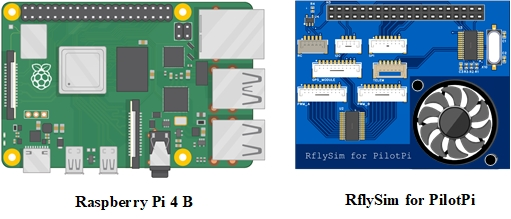

本节将介绍RflyPilot的硬件连接情况，以及在不同仿真验证模式下的最小硬件配置方案。
RflyPilot底板的硬件接口如下图所示

IMU传感器板如下图所示，⑩应与司相连

线序介绍
①辅助PWM接口（用于舵机等）
| 左 | 右 | ||||||||
|---|---|---|---|---|---|---|---|---|---|
| GND | PWM1 | PWM2 | PWM3 | PWM4 | PWM5 | PWM6 | PWM7 | PWM8 | 5V |
注意
应避免RflyPilot飞控对外供电，主副PWM的5V引脚应悬空。
②主PWM接口（用于电调）
| 左 | 右 | ||||||||
|---|---|---|---|---|---|---|---|---|---|
| GND | PWM1 | PWM2 | PWM3 | PWM4 | PWM5 | PWM6 | PWM7 | PWM8 | 5V |
注意
应避免RflyPilot飞控对外供电，主副PWM的5V引脚应悬空。
③预留串口
| 左 | 右 | ||||
|---|---|---|---|---|---|
| GND | RTSB | CTSB | RXB | TXB | 5V |
④IMU接口
| 上 | 下 | ||||
|---|---|---|---|---|---|
| GND | MISO | MOSI | CLK | CS | 3V3 |
⑤SBUS/IBUS接收机接口
| 左 | 右 | |||
|---|---|---|---|---|
| GND | NC | NC | RC | 5V |
⑥GPS接口
| 左 | 右 | ||||||||
|---|---|---|---|---|---|---|---|---|---|
| 5V | TX | RX | SCL | SDA | NC | NC | 3V3 | NC | GND |
⑦外置IIC总线接口
| 左 | 右 | ||
|---|---|---|---|
| 5V | SCL | SDA | GND |
⑧电源模块接口(推荐PM06)
| 上 | 下 | ||||
|---|---|---|---|---|---|
| 5V | 5V | BAT_V | BAT_I | GND | GND |
⑨Type-C USB
注意
默认该TypeC接口允许作为电源输入接口，但无法对外供电。如需供电需短接电路板上的D1二极管。
⑩IMU板接口
| 上 | 下 | ||||
|---|---|---|---|---|---|
| 3V3 | CS | CLK | MOSI | MISO | GND |
连接说明
MIL仿真
由于MIL仿真的控制器与模型均运行于Simulink中，故其并不需要RflyPilot飞控硬件。为了让仿真时飞行器具有更好地操控性，可以将遥控器连接至计算机。这一小结将主要介绍如何连接遥控器用以进行MIL仿真。
需要用一根USB线连接到计算机，此时便可以通过遥控器控制Simulink中的仿真模型。这里笔者使用的是富斯的遥控器，该遥控器可以作为计算机的输入设备，同时Simulink中也有相应的组件支持（Pilot Joystick），驱动正确安装完成后，将在设备管理器中出现“人机接口设备/HID-compliant game controller”。
遥控器指令输入对应MIL仿真模型中的Real RC模块。
Tips
Simulink中的Pilot Joystick模块，除了支持富斯的这款遥控器之外，也支持其他遥控器，笔者在这里没有过多尝试。
SIH仿真
在SIH仿真模式下，由于飞控软件和被控对象都运行在RflyPilot中，并不需要连接到飞行器本体上，但是由于仿真过程中，需要输入控制指令，此时，还需要将遥控器的接收机连接到RflyPilot上。
故在SIH仿真模式下，硬件准备上，只需要RflyPilot与遥控器和接收机，最后通过WIFI连接到计算机，在RflySim3D上进行显示。

HIL仿真
HIL仿真相比于实飞实验的区别是RflyPilot飞控直接连接到半物理仿真系统上而不是连接到真实的飞机上。所以进行HIL仿真需要半物理仿真系统，这里笔者采用的是课题组自研的硬件在环实时仿真平台。利用该平台可以完成被控对象的模拟，同时也利用其强大的FPGA，实现传感器级的精细模拟。
由于进行HIL仿真并不需要真实的传感器，为了方便进行HIL仿真，笔者直接使用树莓派4B和“Rflysim for Pilot"接口板代替RflyPilot连接到硬件在环仿真平台上。

将以上两个组件拼接完成后，得到了可以用于硬件在环仿真的RflyPilot。
注意
由于前期硬件电路设计存在一些小问题，串口芯片SC16IS752IPW的中断引脚没有连接到树莓派的BCM24号引脚，故这里增加了红色飞线

参考硬件在环实时仿真平台中的教程进行硬件连接，便可以得到如下半物理联合仿真平台。
Tip
由于飞控运行时处理器功率增加，为保障计算性能，建议使用大功率电源连接树莓派。
注意
应避免RflyPilot飞控对外供电，主副PWM的5V引脚应悬空。
实飞实验
实飞实验的硬件连接可以参考如下图。
Tip
RflyPilot在工作时对电源功率有一定的要求，这里推荐读者使用PM06电源模块。
注意
应避免RflyPilot飞控对外供电，主副PWM的5V引脚应悬空。